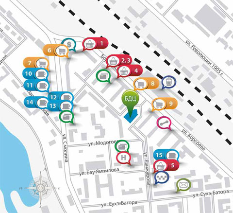
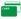

посетителей здания, в том числе подземная и наземная парковка, фитнес-центр, магазины, рестораны, отделение банка, почтовое
отделение и бюро обслуживания на базе гостиницы.
Благодаря центральному положению комплекс находится в окружении объектов социальной, бытовой и финансовой
инфраструктуры. В непосредственной близости расположена площадь Советов - центральная площадь города, традиционное
место сбора горожан и гостей для прогулок и отдыха.
Правительственные здания, Сбербанк и другие банки, Главпочтамт, Центральный узел связи, театры, кинотеатры и концертный
залы, рестораны, кафе и магазины компактно расположились по периметру центральной площади в пределах комфортной
досягаемости от Бурятского Делового центра.






Описание проектаО городеРасположениеИнфраструктураТехнические характеристики
Советский район, ул. Борсоева, 19/Б